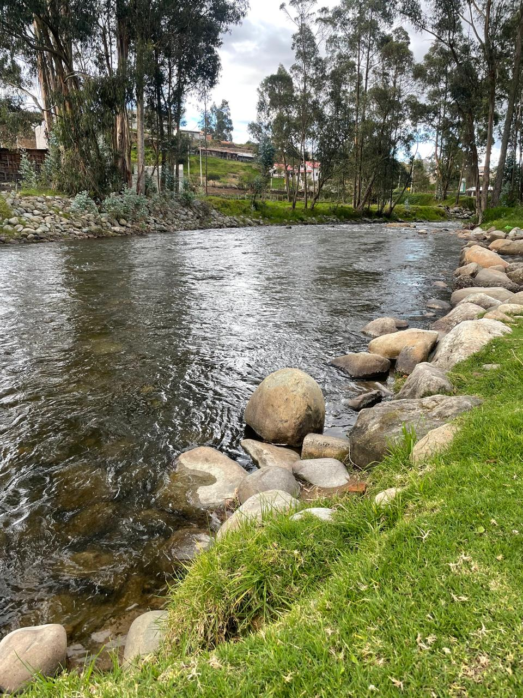
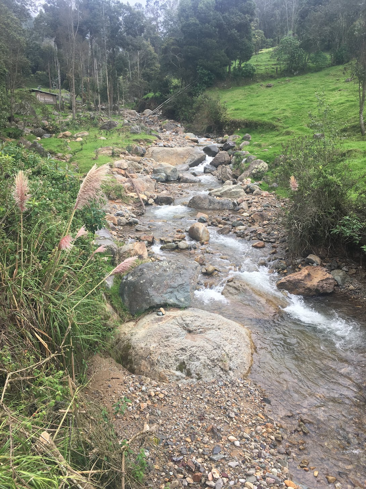

Urban Case Study

The urban case study will focus on a yet-to-be-selected vulnerable neighborhood in Cuenca, Ecuador. It aims to address the growing challenges of flooding, heat stress, and rising water demand. With support from ETAPA and local authorities, the project will deploy low-cost climate sensors, engage communities, and develop participatory adaptation strategies.
A dashboard will be made public to monitor urban hydroclimatic indicators in real time. The final location will be selected based on vulnerability, representativeness, and stakeholder interest.
Rural Case Study

The rural case study will take place in an irrigation system in the Azuay province. The exact site is being selected based on its vulnerability to drought and water management needs. Working with the Provincial Irrigation Direction, the project will install water monitoring tools, assess climate stress, and co-develop adaptation strategies using the UNESCO-CRIDA methodology.
The goal is to create scalable solutions that strengthen rural water governance and improve the resilience of farming communities dependent on irrigation.
Master thesis topics underway
1. Ecohydrological vulnerability and resilience of a páramo catchment under climate stress: a bottom-up modeling approach.
Páramo ecosystems play a fundamental role in the hydrological regulation of the Andes, yet they are highly vulnerable to climate change. Evaluating these impacts remains challenging for decision-making, largely due to the high uncertainty associated with local processes that amplify climate variability. This research adopts a bottom-up approach proposed in the CRIDA framework to evaluate the ecohydrological vulnerability and resilience of a páramo catchment in southern Ecuador. A baseline representation of the system is first developed using the hydrological model HBV-light, calibrated with 15 years of hydrometeorological data. A climate stress test is then applied by systematically perturbing precipitation and temperature, allowing the exploration of a wide range of plausible conditions. The system’s response is evaluated using ecohydrological indices derived from the runoff regime, which capture changes in its functional behavior. This approach enables the identification of climate stress domains and the definition of vulnerability thresholds associated with significant alterations in these indices. Their plausibility is assessed using regionalized climate projections under the SSP3-7.0 scenario, linking system sensitivity to physically consistent future conditions. Finally, resilience is examined through the simulation of adaptation measures, represented as modifications to key model parameters, and their ability to reduce hydrological alterations under climate change scenarios. Overall, this research presents a novel framework that integrates climate stress testing, ecohydrological analysis, and vulnerability thresholds, providing a robust quantitative basis to support decision-making in sustainable water management in mountain catchments.
2. Green area effectiveness for improving outdoor thermal comfort in an Andean mid-size city
Climate and urbanization changes pose significant challenges to urban habitability and population well-being, driven by rising global temperatures and more frequent extreme heat events that negatively affect human health, public space use, and overall quality of life. In the Andean context, high altitude and complex topography give rise to specific climatic dynamics characterized by high solar radiation and daily thermal variations that are not always adequately captured by comfort thresholds defined at the global scale. Within this framework, the present research aims to evaluate the effectiveness of green areas as an adaptation measure to improve thermal comfort in open urban spaces of the Andean mid-size city of Cuenca. To this end, the study aims (i) to quantify the current impact of green areas on urban thermal comfort, and (ii) to project future comfort levels and population dissatisfaction under climate change scenarios and stress tests, incorporating green infrastructure as an adaptation strategy. To achieve the first objective, a quantitative-qualitative methodological approach is proposed that links the Universal Thermal Climate Index (UTCI) with in situ thermal perception surveys (TSV). The procedure includes calibrating local thresholds and comparing areas with and without green cover. For the second objective, the calibrated UTCI will be projected based on future climate change scenarios and stress tests, including the expansion of green infrastructure in strategic urban locations. This study will provide technical criteria for urban planning and the design of green areas as adaptation measures in high-mountain Andean cities.
3. Identifying robust adaptation strategies in a high Andean irrigation system through CRIDA-based climate stress-testing
Agriculture in high Andean ecosystems faces hydroclimatic and biophysical constraints that amplify its sensitivity to climate variability. Small alterations in the climatic regime can significantly reduce agricultural performance. Despite this exposure, vulnerability assessments in high mountain irrigation systems commonly rely on top-down projections derived from coarse-resolution global climate models that often inadequately represent local hydroclimatic processes and limit the reliable identification of operational thresholds under deep uncertainty. Bottom-up stress-testing approaches provide a more precise alternative by evaluating system performance across a defined stressor space. This study analyzes the vulnerability of agricultural production in a high Andean irrigation system under adverse climatic conditions by integrating the CRIDA decision-making framework with the FAO AquaCrop model. The analysis will focus on system response to water deficits induced by precipitation and temperature variations, accounting for the duration of climate stress events. The application of climate stress tests will allow the exploration of plausible scenarios enabling the determination of response levels and vulnerability curves that identify critical operational thresholds of the irrigation system defined in terms of minimum yield and water productivity. The study is expected to provide quantitative evidence of system sensitivity to prolonged deficits compared to short high-intensity deficits and to support the evaluation of adaptation strategies that remain robust under climate uncertainty.